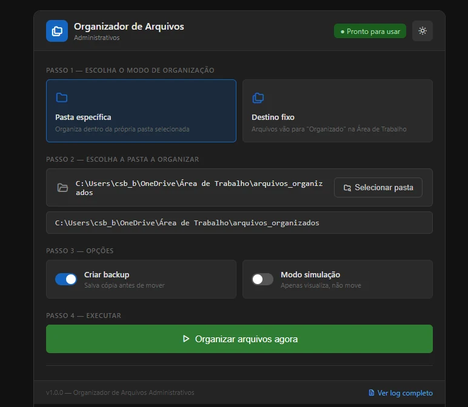
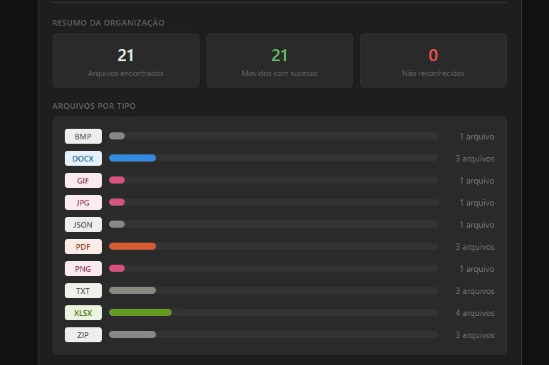

Organização manual
Arquivos misturados em uma única pasta, exigindo análise e movimentação individual.
- Formatos misturados
- Nomes inconsistentes
- Tempo alto para encontrar
- Risco de mover errado
- Sem rastreabilidade
Automação • Organização
Ferramenta em Python que organiza arquivos de forma automática com base em regras definidas, padronizando nomes, classificando por tipo e movendo para pastas corretas.
Reduz o tempo gasto em tarefas repetitivas e traz mais organização, rastreabilidade e segurança para o dia a dia.

Pastas administrativas acumulam arquivos de diferentes formatos e nomes, sem padrão definido.
Tempo gasto na organização manual, dificuldade para localizar documentos e risco de movimentação incorreta.
Analisei o problema, defini as regras de organização, desenvolvi a ferramenta, criei a interface e validei todo o fluxo.
Aplicação funcional, regras de classificação, opções de segurança, relatório de execução e log de ações.
Ferramenta funcional e testada em ambiente local.
Antes e depois
Menos tempo organizando, mais controle sobre a informação.
Arquivos misturados em uma única pasta, exigindo análise e movimentação individual.
Arquivos classificados e movidos para pastas corretas com base nas regras definidas.
Como funciona
Processo simples, automatizado e confiável.
Defina se os arquivos serão organizados na pasta de origem ou em um destino fixo.
Escolha a pasta que contém os arquivos a serem organizados.
Ative o backup e/ou o modo de simulação antes de executar.
A ferramenta identifica os arquivos e aplica as regras por tipo.
Os arquivos são movidos para as pastas correspondentes.
Relatório da execução e log com todas as ações realizadas.
Facilita o uso por qualquer profissional.
Proteção contra perda durante o processo.
Permite validar o resultado antes de mover.
Classificação previsível e padronizada.
Registro de todas as ações para auditoria.
21
Arquivos encontrados no processamento
21
Arquivos movidos com sucesso
0
Arquivos não reconhecidos
7
Pastas criadas com arquivos organizados
Relatório detalhado e log disponíveis para conferência completa.

Este projeto demonstra minha capacidade de identificar um problema real, estruturar regras, desenvolver uma ferramenta funcional e validar o resultado do início ao fim.